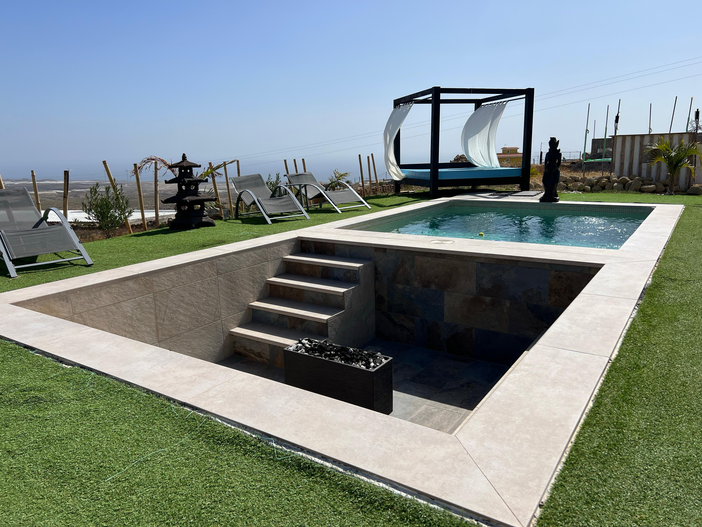
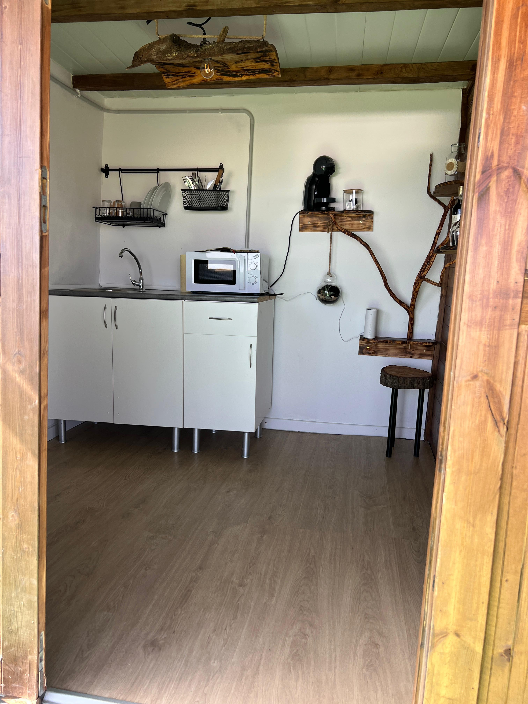
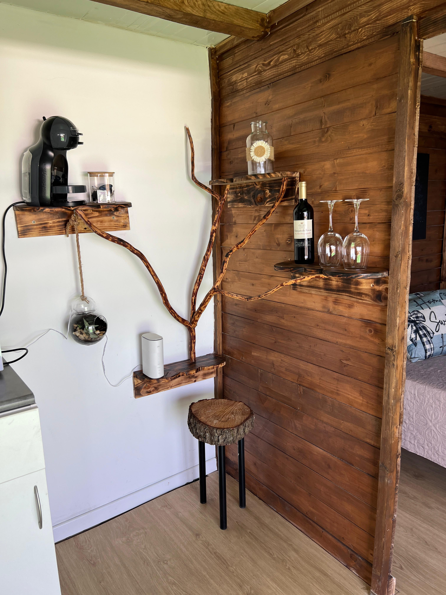
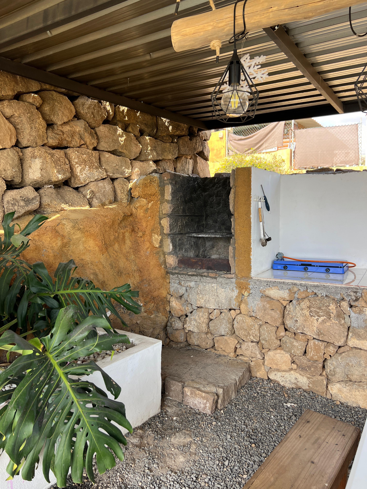
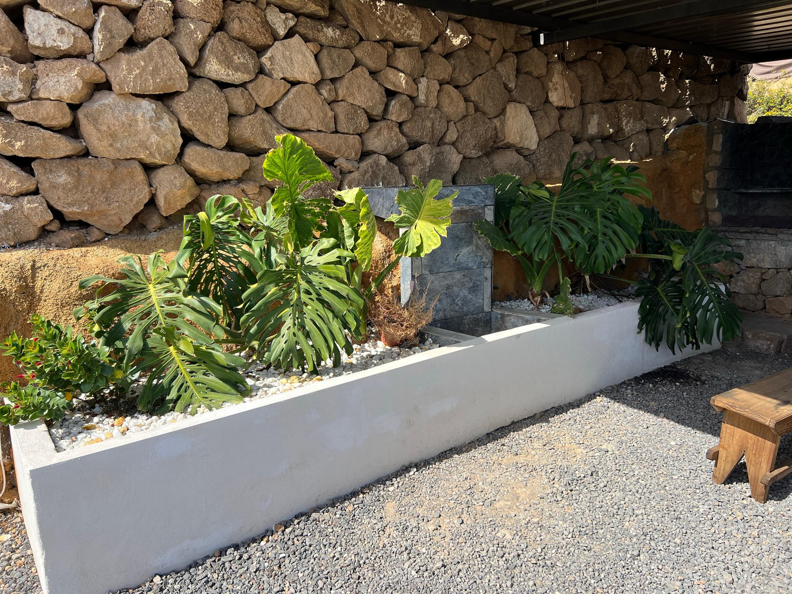
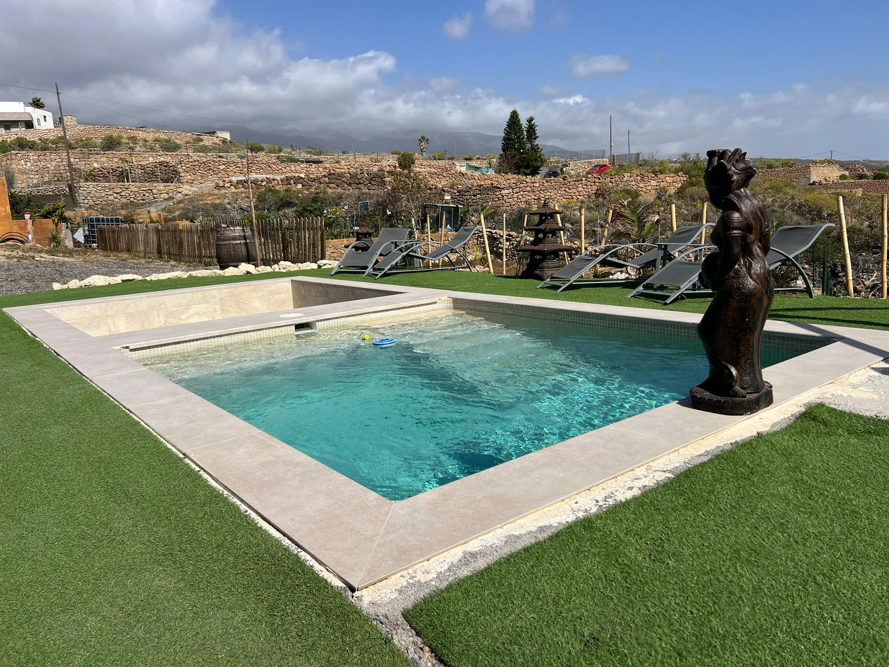
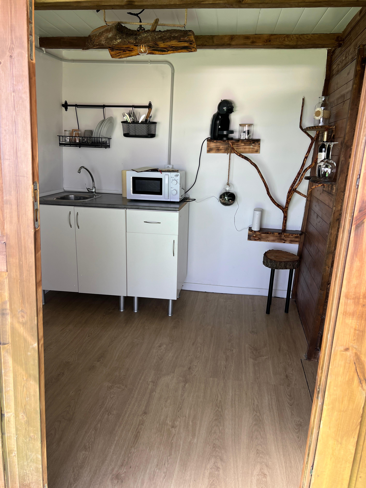
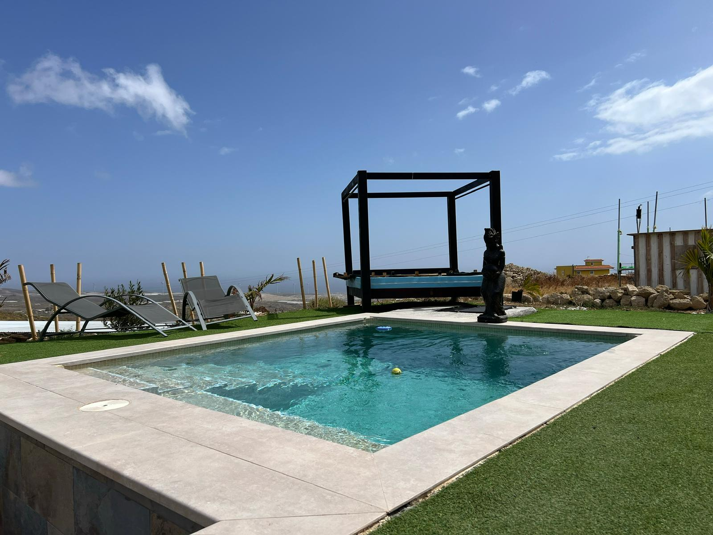
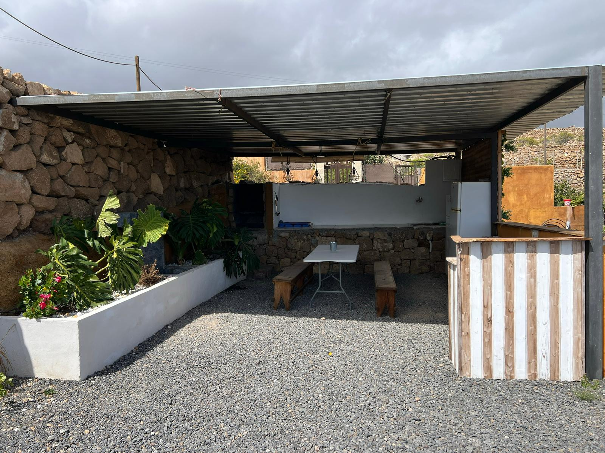
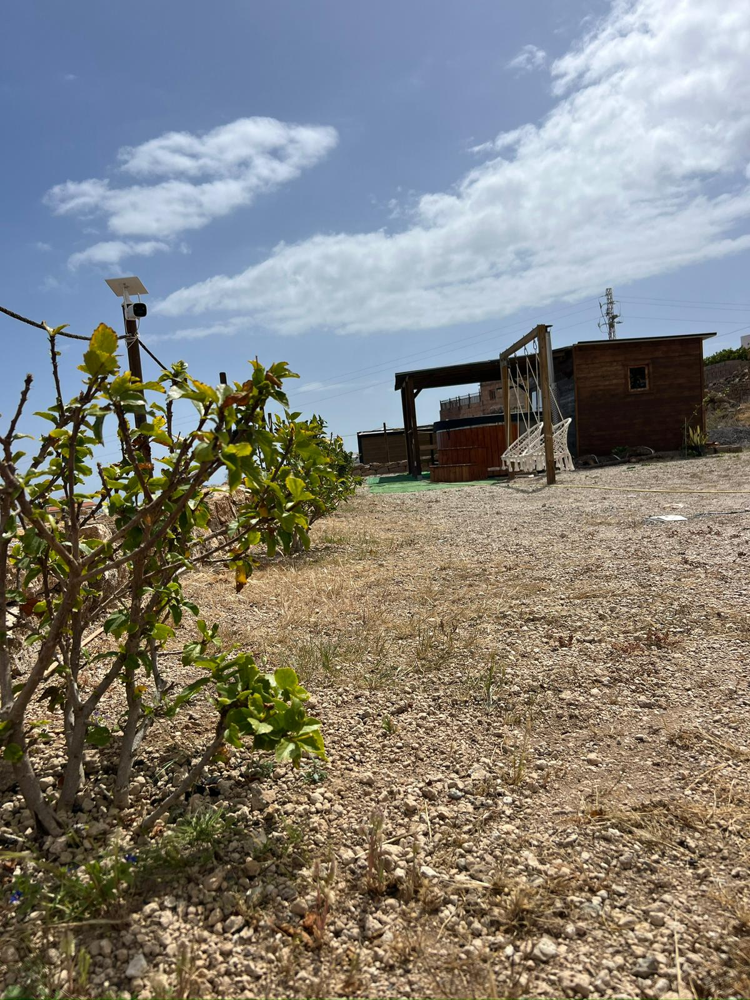

Una finca privata pensata per escapadas romantiche e momenti speciali, dove l'esperienza si concentra sulla tranquillità, il jacuzzi esterno e le viste aperte del sud di Tenerife.
Cabaña privata con spazio interno equipaggiato per la coppia, immersa in un ambiente naturale con vista sul mare e sul paesaggio vulcanico del sud. Possibilità di personalizzare il soggiorno con decorazione e servizi aggiuntivi.
Pack romantico con petali, vino e calici. Jacuzzi al tramonto o di notte sotto le stelle, con illuminazione calda e viste sul mare.
Compleanni, anniversari, piccoli eventi privati. Decorazione personalizzata su richiesta e ambiente preparato per momenti speciali.










Contattaci per disponibilita' e prezzi
💬 Contattaci su WhatsApp